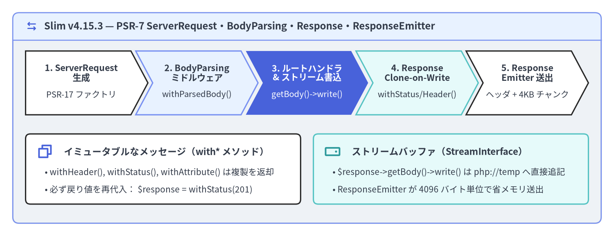
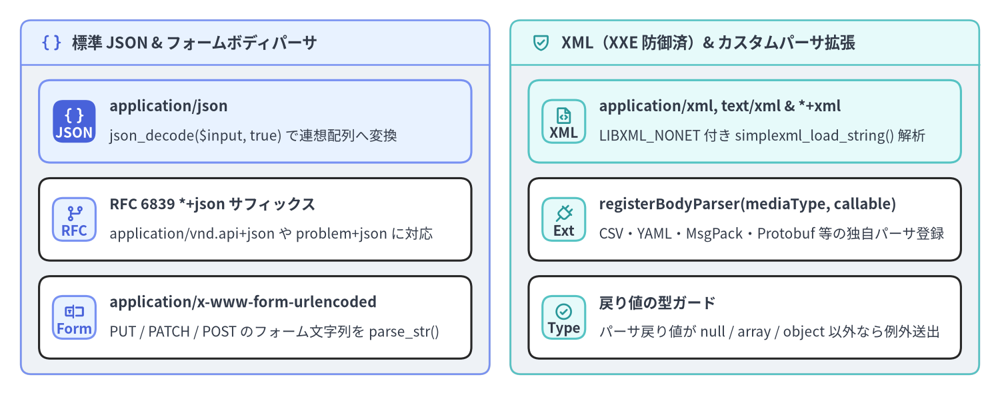

PSR-7 リクエスト・レスポンス・ストリーム
Slim v4.15.3 は、PSR-7 HTTP Message Interface（Psr\Http\Message\ServerRequestInterface、ResponseInterface、StreamInterface、UploadedFileInterface）および PSR-17 HTTP Factories（ResponseFactoryInterface、StreamFactoryInterface）の上に直接構築されています。HTTP メッセージの状態を PHP のスーパーグローバル変数（$_GET、$_POST、$_SERVER、header()、echo）から完全に分離しているため、PHP-FPM、CLI 上の PHPUnit インメモリテスト、常駐ワーカーランタイムのいずれにおいても、すべてのミドルウェアとルートハンドラは予測可能でテスト容易な値オブジェクト（Value Object）として動作します。

Source Code
from drawlib.canvas import save, setup
from drawlib.icons import phosphor
from drawlib.shapes import rectangle
from drawlib.smartarts import ChevronProcess, Panel
from drawlib.styles import Styles
from drawlib.text import text
setup(width=192, height=74, dpi=150)
outer = Panel(
"Slim v4.15.3 — PSR-7 ServerRequest・BodyParsing・Response・ResponseEmitter",
style=Styles.Neutral.patch(shape_r=2.0),
header_style=Styles.PrimaryNeutral.patch(shape_line_width=1.2),
text_style=Styles.DarkBold.patch(text_size=11.5),
icon=phosphor.arrows_left_right,
icon_style=Styles.PrimaryBold,
header_variant="filled",
header_height=8.5,
)
outer.draw((4.0, 4.0), width=184.0, height=66.0)
proc = ChevronProcess(
style=Styles.White,
text_style=Styles.DarkBold.patch(text_size=10.3),
description_style=Styles.Dark.patch(text_size=9.8),
corner_angle=62.0,
spacing=1.5,
flat_left_end=True,
)
proc.add(
"1. ServerRequest\n生成",
description="PSR-17 ファクトリ",
style=Styles.White,
)
proc.add(
"2. BodyParsing\nミドルウェア",
description="withParsedBody()",
style=Styles.PrimaryNeutral,
)
proc.add(
"3. ルートハンドラ\n& ストリーム書込",
description="getBody()->write()",
style=Styles.PrimaryFlat,
text_style=Styles.WhiteBold.patch(text_size=10.3),
description_style=Styles.White.patch(text_size=9.8),
)
proc.add(
"4. Response\nClone-on-Write",
description="withStatus/Header()",
style=Styles.SecondaryNeutral,
)
proc.add(
"5. Response\nEmitter 送出",
description="ヘッダ + 4KB チャンク",
style=Styles.White,
)
proc.draw(xy=(8.0, 38.0), width=176.0, height=20.0)
rectangle((51.0, 21.0), width=86.0, height=22.0, style=Styles.White.patch(shape_r=1.5))
phosphor.copy((14.0, 26.5), width=5.2, style=Styles.PrimaryBold)
text(
(20.0, 26.5),
"イミュータブルなメッセージ（with* メソッド）",
style=Styles.DarkBold.patch(text_size=10.8, halign="left"),
)
text(
(14.0, 20.0),
"• withHeader(), withStatus(), withAttribute() は複製を返却",
style=Styles.Dark.patch(text_size=10.0, halign="left"),
)
text(
(14.0, 14.5),
"• 必ず戻り値を再代入： $response = withStatus(201)",
style=Styles.Dark.patch(text_size=10.0, halign="left"),
)
rectangle((141.0, 21.0), width=86.0, height=22.0, style=Styles.SecondaryNeutral.patch(shape_r=1.5))
phosphor.hard_drive((104.0, 26.5), width=5.2, style=Styles.SecondaryBold)
text(
(110.0, 26.5),
"ストリームバッファ（StreamInterface）",
style=Styles.DarkBold.patch(text_size=10.8, halign="left"),
)
text(
(104.0, 20.0),
"• $response->getBody()->write() は php://temp へ直接追記",
style=Styles.Dark.patch(text_size=10.0, halign="left"),
)
text(
(104.0, 14.5),
"• ResponseEmitter が 4096 バイト単位で省メモリ送出",
style=Styles.Dark.patch(text_size=10.0, halign="left"),
)
save()
PSR-7 のイミュータビリティ（不変性）と Clone-on-Write 原則
PSR-7 において、ServerRequestInterface と ResponseInterface はどちらも**イミュータブルな値オブジェクト（Immutable Value Object）**として定義されています。withHeader()、withAddedHeader()、withStatus()、withAttribute()、withParsedBody() などの with*() メソッドは、元のオブジェクトを変更せず内部で clone $this を実行し、変更が適用された新しいインスタンスを返します。一方、$response->getBody() が返す StreamInterface は基盤となる I/O リソース（php://temp やファイルストリーム）へのハンドルであり、write() 呼び出し時にバッファへ直接書き込まれます。
| PSR-7 インターフェース & メソッド | 変更モデル | 戻り値と実装上のルール |
|---|---|---|
$request->withAttribute(string $name, $value) |
イミュータブル（Clone-on-Write） | 新しい ServerRequestInterface を返却。必ず $request = ... で再代入する |
$request->withParsedBody($data) |
イミュータブル（Clone-on-Write） | 解析済みボディを持つ新しい ServerRequestInterface を返却 |
$response->withStatus(int $code, string $reason = '') |
イミュータブル（Clone-on-Write） | 新しい ResponseInterface を返却。再代入またはそのまま return する |
$response->withHeader(string $name, $value) |
イミュータブル（Clone-on-Write） | 同名ヘッダ（大文字小文字非依存）を上書きした新しいクローンを返却 |
$response->withAddedHeader(string $name, $value) |
イミュータブル（Clone-on-Write） | 既存の同名ヘッダを維持したまま値を追加（複数の Set-Cookie 等） |
$response->getBody()->write(string $string) |
ストリームリソースへの直接追記 | 書き込んだバイト数（int）を返却。共有 StreamInterface バッファを更新 |
[!CAUTION] 典型的なバグ：
withHeader()の戻り値の破棄:$response->withHeader('Content-Type', 'application/json');のように戻り値を変数へ代入せず単独の文として呼び出すと、せっかく生成された新しいクローンが破棄され、レスポンスヘッダが一切反映されません。必ずreturn $response->withStatus(201)->withHeader('Content-Type', 'application/json');のようにメソッドチェーンで返すか、$response = $response->withHeader(...)で再代入してください。
<?php
declare(strict_types=1);
use Psr\Http\Message\ResponseInterface as Response;
use Psr\Http\Message\ServerRequestInterface as Request;
$app->post('/api/v1/items', function (Request $request, Response $response): Response {
$payload = json_encode(['created' => true], JSON_THROW_ON_ERROR);
// StreamInterface::write() は内部ストリームバッファへ直接書き込む
$response->getBody()->write($payload);
// 誤り（クローンが破棄されステータスもヘッダも反映されない）:
// $response->withStatus(201);
// $response->withHeader('Content-Type', 'application/json');
// 正解: クローンされた ResponseInterface をチェーンして return する
return $response
->withStatus(201)
->withHeader('Content-Type', 'application/json')
->withAddedHeader('X-Cache-Tag', 'items')
->withAddedHeader('X-Cache-Tag', 'catalog');
});
クエリ・ヘッダ・Cookie・属性・アップロードファイルの取得
Slim のコントローラやミドルウェア内では $_GET、$_POST、$_COOKIE、$_FILES、$_SERVER を直接参照せず、必ず ServerRequestInterface のメソッド経由で取得します。これにより PHPUnit によるインメモリテストでも本番とまったく同じコードが動作します。
<?php
declare(strict_types=1);
use Psr\Http\Message\ResponseInterface as Response;
use Psr\Http\Message\ServerRequestInterface as Request;
use Psr\Http\Message\UploadedFileInterface;
$app->post('/api/v1/documents', function (Request $request, Response $response): Response {
// 1. クエリパラメータ (?page=2&limit=20)
$queryParams = $request->getQueryParams();
$page = max(1, (int) ($queryParams['page'] ?? 1));
// 2. 大文字・小文字を区別しない HTTP ヘッダ取得
$requestId = $request->getHeaderLine('X-Request-Id') ?: bin2hex(random_bytes(8));
$clientIp = $request->getServerParams()['REMOTE_ADDR'] ?? '127.0.0.1';
// 3. Cookie および前段の認証ミドルウェアが注入したリクエスト属性
$sessionCookie = $request->getCookieParams()['session_id'] ?? null;
$actorId = (int) $request->getAttribute('authenticated_user_id', 0);
// 4. PSR-7 UploadedFileInterface による安全なファイルアップロード処理
$uploadedFiles = $request->getUploadedFiles();
/** @var UploadedFileInterface|null $attachment */
$attachment = $uploadedFiles['document'] ?? null;
$savedFilename = null;
if ($attachment !== null && $attachment->getError() === UPLOAD_ERR_OK) {
$extension = pathinfo((string) $attachment->getClientFilename(), PATHINFO_EXTENSION);
$savedFilename = sprintf('%s.%s', bin2hex(random_bytes(12)), $extension ?: 'bin');
$attachment->moveTo('/var/data/uploads/' . $savedFilename);
}
$payload = json_encode([
'page' => $page,
'request_id' => $requestId,
'client_ip' => $clientIp,
'has_session' => $sessionCookie !== null,
'actor_id' => $actorId,
'uploaded_file' => $savedFilename,
], JSON_THROW_ON_ERROR);
$response->getBody()->write($payload);
return $response->withHeader('Content-Type', 'application/json');
});
BodyParsingMiddleware とカスタムメディアタイプパーサ
素の PSR-7 リクエストでは、通常の POST フォーム送信（$_POST 由来）以外のボディは自動デコードされません。application/json や PUT / PATCH のフォームボディ、XML ペイロード、独自メディアタイプを $request->getParsedBody() で取得するには $app->addBodyParsingMiddleware()（Slim\Middleware\BodyParsingMiddleware）を登録します。このミドルウェアは Content-Type ヘッダからメディアタイプを抽出し、完全一致するパーサが見つからない場合でも RFC 6839 構造化構文サフィックス（+json および +xml）へ自動的にフォールバックしてデコードを実行します。

Source Code
from drawlib.canvas import save, setup
from drawlib.icons import phosphor
from drawlib.smartarts import CardList, Panel
from drawlib.styles import Styles
setup(width=192, height=76, dpi=150)
left_panel = Panel(
"標準 JSON & フォームボディパーサ",
style=Styles.Neutral.patch(shape_r=2.0),
header_style=Styles.PrimaryNeutral.patch(shape_line_width=1.2),
text_style=Styles.DarkBold.patch(text_size=11.2),
icon=phosphor.brackets_curly,
icon_style=Styles.PrimaryBold,
header_variant="filled",
header_height=8.5,
)
left_panel.draw((4.0, 4.0), width=90.0, height=68.0)
l_xy, l_w, l_h = left_panel.get_content_box((4.0, 4.0), width=90.0, height=68.0, padding=(3.5, 3.0))
cl_left = CardList(
style=Styles.White,
text_style=Styles.DarkBold.patch(text_size=10.5),
description_style=Styles.Dark.patch(text_size=10.0),
badge_shape="rounded_rect",
badge_style=Styles.PrimaryNeutral,
badge_text_style=Styles.PrimaryBold.patch(text_size=10.0),
icon_style=Styles.PrimaryBold,
direction="vertical",
spacing=3.0,
)
cl_left.add(
"application/json",
"json_decode($input, true) で連想配列へ変換",
badge_text="JSON",
icon=phosphor.brackets_curly,
style=Styles.PrimaryNeutral,
badge_style=Styles.PrimaryFlat,
badge_text_style=Styles.WhiteBold.patch(text_size=10.0),
icon_style=Styles.WhiteBold,
)
cl_left.add(
"RFC 6839 *+json サフィックス",
"application/vnd.api+json や problem+json に対応",
badge_text="RFC",
icon=phosphor.git_branch,
style=Styles.White,
)
cl_left.add(
"application/x-www-form-urlencoded",
"PUT / PATCH / POST のフォーム文字列を parse_str()",
badge_text="Form",
icon=phosphor.textbox,
style=Styles.White,
)
cl_left.draw(xy=l_xy, width=l_w, height=l_h)
right_panel = Panel(
"XML（XXE 防御済）& カスタムパーサ拡張",
style=Styles.Neutral.patch(shape_r=2.0),
header_style=Styles.SecondaryNeutral.patch(shape_line_width=1.2),
text_style=Styles.DarkBold.patch(text_size=11.2),
icon=phosphor.shield_check,
icon_style=Styles.SecondaryBold,
header_variant="filled",
header_height=8.5,
)
right_panel.draw((98.0, 4.0), width=90.0, height=68.0)
r_xy, r_w, r_h = right_panel.get_content_box((98.0, 4.0), width=90.0, height=68.0, padding=(3.5, 3.0))
cl_right = CardList(
style=Styles.White,
text_style=Styles.DarkBold.patch(text_size=10.5),
description_style=Styles.Dark.patch(text_size=10.0),
badge_shape="rounded_rect",
badge_style=Styles.SecondaryNeutral,
badge_text_style=Styles.DarkBold.patch(text_size=10.0),
icon_style=Styles.SecondaryBold,
direction="vertical",
spacing=3.0,
)
cl_right.add(
"application/xml, text/xml & *+xml",
"LIBXML_NONET 付き simplexml_load_string() 解析",
badge_text="XML",
icon=phosphor.file_code,
style=Styles.SecondaryNeutral,
)
cl_right.add(
"registerBodyParser(mediaType, callable)",
"CSV・YAML・MsgPack・Protobuf 等の独自パーサ登録",
badge_text="Ext",
icon=phosphor.plug,
style=Styles.White,
)
cl_right.add(
"戻り値の型ガード",
"パーサ戻り値が null / array / object 以外なら例外送出",
badge_text="Type",
icon=phosphor.check_circle,
style=Styles.White,
)
cl_right.draw(xy=r_xy, width=r_w, height=r_h)
save()
また、$bodyParsingMiddleware->registerBodyParser(string $mediaType, callable $callable) を呼び出すことで、text/csv や application/msgpack、application/x-yaml などのカスタムパーサを追加登録できます（パーサの戻り値は null、array、または object である必要があり、それ以外の型を返すと RuntimeException がスローされます）。
<?php
declare(strict_types=1);
use Psr\Http\Message\ResponseInterface as Response;
use Psr\Http\Message\ServerRequestInterface as Request;
use Slim\Factory\AppFactory;
$app = AppFactory::create();
// 標準の JSON / Form / XML ボディパーサを有効化
$bodyParsingMiddleware = $app->addBodyParsingMiddleware();
// text/csv メディアタイプ用のカスタムパーサを追加登録
$bodyParsingMiddleware->registerBodyParser('text/csv', static function (string $input): array {
$lines = array_values(array_filter( preg_split('/\r\n|\r|\n/', trim($input)) ?: [] ));
if ($lines === []) {
return [];
}
$headers = str_getcsv((string) array_shift($lines));
$rows = [];
foreach ($lines as $line) {
$values = str_getcsv($line);
if (count($values) === count($headers)) {
$rows[] = array_combine($headers, $values);
}
}
return $rows;
});
$app->post('/api/v1/import', function (Request $request, Response $response): Response {
$parsed = (array) ($request->getParsedBody() ?? []);
$payload = json_encode(['imported_count' => count($parsed)], JSON_THROW_ON_ERROR);
$response->getBody()->write($payload);
return $response->withHeader('Content-Type', 'application/json');
});
JSON レスポンス・リダイレクト・ファイルストリームと ResponseEmitter
ルートハンドラからレスポンスを返却する際は、用途に応じてメモリ効率の良いストリーム操作を選択します。
- JSON レスポンスの構築:
json_encode($data, JSON_THROW_ON_ERROR | JSON_UNESCAPED_SLASHES)でシリアライズした文字列を$response->getBody()->write($json)に書き込み、Content-Type: application/jsonヘッダを付与します。 - 大容量ファイルのストリーミング配信（
StreamFactoryInterface::createStreamFromFile()）: 数十 MB 以上の CSV や ZIP ファイルをfile_get_contents()で一括読み込みすると PHP のmemory_limitを圧迫します。代わりに$streamFactory->createStreamFromFile($path, 'rb')で生成したストリームを$response->withBody($fileStream)でセットします。 Slim\ResponseEmitterの送出メカニズム:$app->run()の最終段階で呼び出されるResponseEmitter::emit()は、まず全レスポンスヘッダを送出し（この際、Set-Cookieヘッダだけは複数クッキーが上書きされないよう個別にreplace: falseで送出します）、続いてHTTP/1.1 200 OKステータス行を送出した後、ボディストリームを$responseChunkSize = 4096バイト単位で順次読み出してクライアントへフラッシュします。
<?php
declare(strict_types=1);
use Psr\Http\Message\ResponseInterface as Response;
use Psr\Http\Message\ServerRequestInterface as Request;
use Psr\Http\Message\StreamFactoryInterface;
$app->get('/api/v1/exports/{filename:[a-z0-9_-]+\.csv}', function (
Request $request,
Response $response,
array $args
) use ($container): Response {
$filePath = '/var/data/exports/' . $args['filename'];
/** @var StreamFactoryInterface $streamFactory */
$streamFactory = $container->get(StreamFactoryInterface::class);
$fileStream = $streamFactory->createStreamFromFile($filePath, 'rb');
return $response
->withStatus(200)
->withHeader('Content-Type', 'text/csv; charset=utf-8')
->withHeader('Content-Disposition', sprintf('attachment; filename="%s"', $args['filename']))
->withBody($fileStream);
});
PSR-7 メッセージの不変性、BodyParsingMiddleware、およびストリーム送出の仕組みを理解したら、次ページの PSR-15 同心円 LIFO ミドルウェアパイプライン に進み、アプリケーション・ルートグループ・ルートの 3 階層にわたるミドルウェアの実行順序と標準ユーティリティミドルウェアの配置ルールを確認しましょう。また、各クラスの詳細な API 仕様は Slim 4 API リファレンス および Slim 4 内部アーキテクチャ解説 を参照してください。